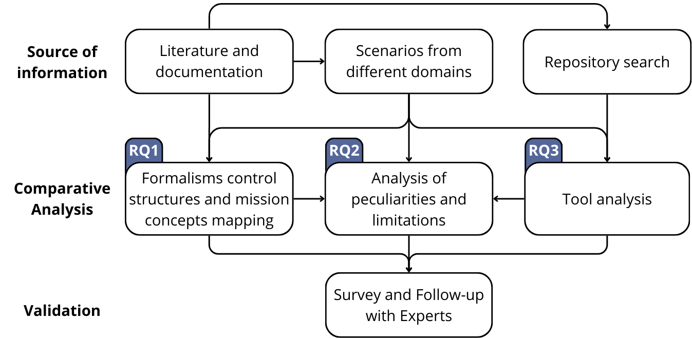

Abstract
...
Formalisms
Behavior Trees (BT)
...
State Machines (SM)
...
Hierarchical Task Network (HTN)
...
Business Process Modeling Notation (BPMN)
...
Research Questions
RQ1
How can control structures and mission concepts be modeled with the formalisms?
Control Structures
RQ3
Which and to what extent publicly available tools support the formalisms?
Tool Analysis
Methodology
...

Authors
...